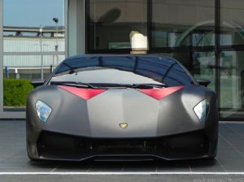

|  |
Lamborghini Sesto Elemento
|
The Lamborghini Sesto Elemento is a limited-edition high-performance supercar produced by the Italian automaker Lamborghini. It was first introduced as a concept car at the 2010 Paris Motor Show and later produced in a limited run of only 20 units, all of which were sold out before the car was even officially announced.
The Sesto Elemento features a mid-engine layout and is powered by a naturally aspirated 5.2-liter V10 engine, which produces 570 horsepower and 398 lb-ft of torque. It is mated to a six-speed automated manual transmission and Lamborghini's all-wheel-drive system.
The Sesto Elemento is built using advanced lightweight materials, including carbon fiber and carbon fiber reinforced polymer (CFRP), which helps to reduce its weight to just 2,202 pounds (999 kg). This makes it one of the lightest and fastest Lamborghinis ever produced, with a top speed of 219 mph and a 0 to 60 mph time of just 2.5 seconds.
The Sesto Elemento's exterior design is characterized by sharp angles, aggressive styling, and a low-slung profile that is typical of Lamborghini's supercars. The interior is minimalistic and focused on performance, with racing seats, a roll cage, and a stripped-down dashboard.
The Sesto Elemento was designed to be a track-focused supercar that is optimized for speed and performance. It was not intended for use on public roads and was primarily sold to collectors and enthusiasts who wanted a rare and exclusive Lamborghini.
Overall, the Lamborghini Sesto Elemento is a unique and impressive supercar that showcases Lamborghini's advanced engineering and design capabilities. It is considered to be a highly collectible and sought-after car among Lamborghini fans and automotive enthusiasts alike.